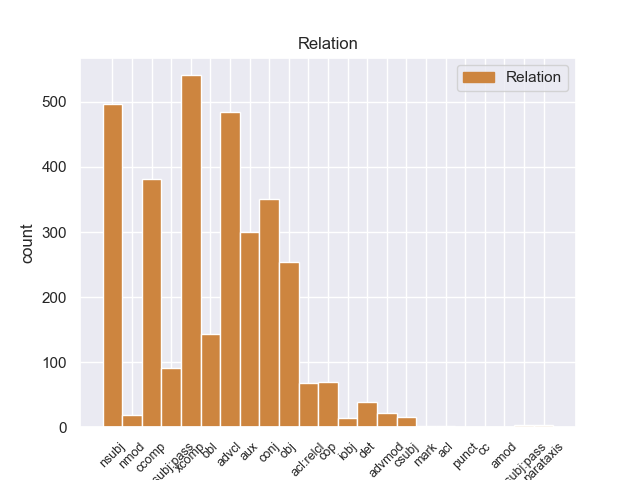
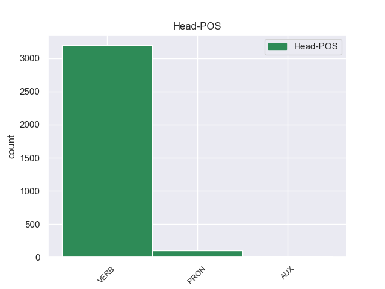
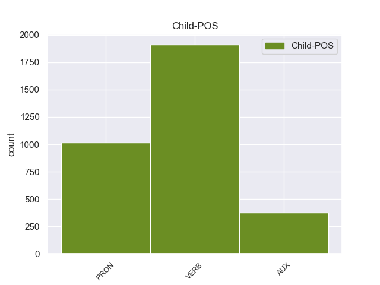

Distribution of features within this leaf



Agreement Rules sorted by frequency.
- When the dependent token is the nominal subject(nsubj) of the head token,
1 Η _ _ _ _ 0 _ _ _
2 δράση _ _ _ _ 0 _ _ _
3 3 _ _ _ _ 0 _ _ _
4 περιλαμβάνει _ _ _ _ 0 _ _ _
5 τις _ _ _ _ 0 _ _ _
6 πρωτοβουλίες _ _ _ _ 0 _ _ _
7 σ _ _ _ _ 0 _ _ _
8 τον _ _ _ _ 0 _ _ _
9 τομέα _ _ _ _ 0 _ _ _
10 της _ _ _ _ 0 _ _ _
11 νεολαίας _ _ _ _ 0 _ _ _
12 , _ _ _ _ 0 _ _ _
13 η _ _ _ _ 0 _ _ _
14 δράση _ _ _ _ 0 _ _ _
15 4 _ _ _ _ 0 _ _ _
16 την _ _ _ _ 0 _ _ _
17 υποστήριξη _ _ _ _ 0 _ _ _
18 πρωτοβουλιών _ _ _ _ 0 _ _ _
19 που που PRON PRON Case=Nom|Gender=Fem|Number=Plur|Person=3|PronType=Rel 20 nsubj _ _
20 ξεπερνούν ξεπερνώ VERB VERB Aspect=Imp|Mood=Ind|Number=Plur|Person=3|Tense=Pres|VerbForm=Fin|Voice=Act 0 _ _ _
21 το _ _ _ _ 0 _ _ _
22 πλαίσιο _ _ _ _ 0 _ _ _
23 των _ _ _ _ 0 _ _ _
24 μεμονωμένων _ _ _ _ 0 _ _ _
25 προγραμμάτων _ _ _ _ 0 _ _ _
26 και _ _ _ _ 0 _ _ _
27 διεξάγονται _ _ _ _ 0 _ _ _
28 από _ _ _ _ 0 _ _ _
29 κοινού _ _ _ _ 0 _ _ _
30 με _ _ _ _ 0 _ _ _
31 τα _ _ _ _ 0 _ _ _
32 προγράμματα _ _ _ _ 0 _ _ _
33 LEONARDO _ _ _ _ 0 _ _ _
34 και _ _ _ _ 0 _ _ _
35 ΣΩΚΡΑΤΗΣ _ _ _ _ 0 _ _ _
36 . _ _ _ _ 0 _ _ _
1 Σ _ _ _ _ 0 _ _ _
2 το _ _ _ _ 0 _ _ _
3 μεταξύ _ _ _ _ 0 _ _ _
4 , _ _ _ _ 0 _ _ _
5 τα _ _ _ _ 0 _ _ _
6 κρατικά _ _ _ _ 0 _ _ _
7 μέσα _ _ _ _ 0 _ _ _
8 ενημέρωσης _ _ _ _ 0 _ _ _
9 της _ _ _ _ 0 _ _ _
10 Συρίας _ _ _ _ 0 _ _ _
11 μετέδωσαν _ _ _ _ 0 _ _ _
12 την _ _ _ _ 0 _ _ _
13 Κυριακή _ _ _ _ 0 _ _ _
14 ότι _ _ _ _ 0 _ _ _
15 " _ _ _ _ 0 _ _ _
16 το _ _ _ _ 0 _ _ _
17 Ανώτατο _ _ _ _ 0 _ _ _
18 Δικαστικό _ _ _ _ 0 _ _ _
19 Συμβούλιο _ _ _ _ 0 _ _ _
20 της _ _ _ _ 0 _ _ _
21 Συρίας _ _ _ _ 0 _ _ _
22 ακύρωσε _ _ _ _ 0 _ _ _
23 νομικές _ _ _ _ 0 _ _ _
24 διαδικασίες _ _ _ _ 0 _ _ _
25 σε _ _ _ _ 0 _ _ _
26 βάρος _ _ _ _ 0 _ _ _
27 προσωπικοτήτων _ _ _ _ 0 _ _ _
28 της _ _ _ _ 0 _ _ _
29 Αντιπολίτευσης _ _ _ _ 0 _ _ _
30 που _ _ _ _ 0 _ _ _
31 βρίσκονται _ _ _ _ 0 _ _ _
32 σ _ _ _ _ 0 _ _ _
33 το _ _ _ _ 0 _ _ _
34 εξωτερικό _ _ _ _ 0 _ _ _
35 , _ _ _ _ 0 _ _ _
36 έτσι _ _ _ _ 0 _ _ _
37 ώστε _ _ _ _ 0 _ _ _
38 να _ _ _ _ 0 _ _ _
39 μπορέσουν μπορώ VERB VERB Aspect=Perf|Mood=Ind|Number=Plur|Person=3|VerbForm=Fin|Voice=Act 0 _ _ _
40 να _ _ _ _ 0 _ _ _
41 επιστρέψουν επιστρέφω VERB VERB Aspect=Perf|Mood=Ind|Number=Plur|Person=3|VerbForm=Fin|Voice=Act 39 xcomp _ _
42 σ _ _ _ _ 0 _ _ _
43 τη _ _ _ _ 0 _ _ _
44 Συρία _ _ _ _ 0 _ _ _
45 για _ _ _ _ 0 _ _ _
46 να _ _ _ _ 0 _ _ _
47 συμμετάσχουν _ _ _ _ 0 _ _ _
48 σε _ _ _ _ 0 _ _ _
49 εθνικό _ _ _ _ 0 _ _ _
50 διάλογο _ _ _ _ 0 _ _ _
51 που _ _ _ _ 0 _ _ _
52 πρότεινε _ _ _ _ 0 _ _ _
53 ο _ _ _ _ 0 _ _ _
54 Μπασάρ _ _ _ _ 0 _ _ _
55 αλ _ _ _ _ 0 _ _ _
56 Άσαντ _ _ _ _ 0 _ _ _
57 σ _ _ _ _ 0 _ _ _
58 τις _ _ _ _ 0 _ _ _
59 αρχές _ _ _ _ 0 _ _ _
60 του _ _ _ _ 0 _ _ _
61 μήνα _ _ _ _ 0 _ _ _
62 " _ _ _ _ 0 _ _ _
63 . _ _ _ _ 0 _ _ _
1 « _ _ _ _ 0 _ _ _
2 Δεκαεννέα _ _ _ _ 0 _ _ _
3 κρατούμενοι _ _ _ _ 0 _ _ _
4 , _ _ _ _ 0 _ _ _
5 μέλη _ _ _ _ 0 _ _ _
6 της _ _ _ _ 0 _ _ _
7 Αλ _ _ _ _ 0 _ _ _
8 Κάιντα _ _ _ _ 0 _ _ _
9 και _ _ _ _ 0 _ _ _
10 της _ _ _ _ 0 _ _ _
11 Ανσάρ _ _ _ _ 0 _ _ _
12 αλ-Σούνα _ _ _ _ 0 _ _ _
13 , _ _ _ _ 0 _ _ _
14 απέδρασαν αποδιδρώ VERB VERB Aspect=Perf|Mood=Ind|Number=Plur|Person=3|Tense=Past|VerbForm=Fin|Voice=Act 0 _ _ _
15 σ _ _ _ _ 0 _ _ _
16 τις _ _ _ _ 0 _ _ _
17 03:30 _ _ _ _ 0 _ _ _
18 από _ _ _ _ 0 _ _ _
19 τη _ _ _ _ 0 _ _ _
20 φυλακή _ _ _ _ 0 _ _ _
21 , _ _ _ _ 0 _ _ _
22 αφού _ _ _ _ 0 _ _ _
23 αποκοίμισαν αποκοιμίζω VERB VERB Aspect=Perf|Mood=Ind|Number=Plur|Person=3|Tense=Past|VerbForm=Fin|Voice=Act 14 advcl _ _
24 τους _ _ _ _ 0 _ _ _
25 δεσμοφύλακες _ _ _ _ 0 _ _ _
26 και _ _ _ _ 0 _ _ _
27 τους _ _ _ _ 0 _ _ _
28 υπόλοιπους _ _ _ _ 0 _ _ _
29 κρατούμενους _ _ _ _ 0 _ _ _
30 . _ _ _ _ 0 _ _ _
1 Η _ _ _ _ 0 _ _ _
2 δράση _ _ _ _ 0 _ _ _
3 3 _ _ _ _ 0 _ _ _
4 περιλαμβάνει _ _ _ _ 0 _ _ _
5 τις _ _ _ _ 0 _ _ _
6 πρωτοβουλίες _ _ _ _ 0 _ _ _
7 σ _ _ _ _ 0 _ _ _
8 τον _ _ _ _ 0 _ _ _
9 τομέα _ _ _ _ 0 _ _ _
10 της _ _ _ _ 0 _ _ _
11 νεολαίας _ _ _ _ 0 _ _ _
12 , _ _ _ _ 0 _ _ _
13 η _ _ _ _ 0 _ _ _
14 δράση _ _ _ _ 0 _ _ _
15 4 _ _ _ _ 0 _ _ _
16 την _ _ _ _ 0 _ _ _
17 υποστήριξη _ _ _ _ 0 _ _ _
18 πρωτοβουλιών _ _ _ _ 0 _ _ _
19 που _ _ _ _ 0 _ _ _
20 ξεπερνούν ξεπερνώ VERB VERB Aspect=Imp|Mood=Ind|Number=Plur|Person=3|Tense=Pres|VerbForm=Fin|Voice=Act 0 _ _ _
21 το _ _ _ _ 0 _ _ _
22 πλαίσιο _ _ _ _ 0 _ _ _
23 των _ _ _ _ 0 _ _ _
24 μεμονωμένων _ _ _ _ 0 _ _ _
25 προγραμμάτων _ _ _ _ 0 _ _ _
26 και _ _ _ _ 0 _ _ _
27 διεξάγονται διεξάγω VERB VERB Aspect=Imp|Mood=Ind|Number=Plur|Person=3|Tense=Pres|VerbForm=Fin|Voice=Pass 20 conj _ _
28 από _ _ _ _ 0 _ _ _
29 κοινού _ _ _ _ 0 _ _ _
30 με _ _ _ _ 0 _ _ _
31 τα _ _ _ _ 0 _ _ _
32 προγράμματα _ _ _ _ 0 _ _ _
33 LEONARDO _ _ _ _ 0 _ _ _
34 και _ _ _ _ 0 _ _ _
35 ΣΩΚΡΑΤΗΣ _ _ _ _ 0 _ _ _
36 . _ _ _ _ 0 _ _ _
1 Υποστήριξε υποστηρίζω VERB VERB Aspect=Perf|Mood=Ind|Number=Sing|Person=3|Tense=Past|VerbForm=Fin|Voice=Act 0 _ _ _
2 πως _ _ _ _ 0 _ _ _
3 τα _ _ _ _ 0 _ _ _
4 ανθρώπινα _ _ _ _ 0 _ _ _
5 δικαιώματα _ _ _ _ 0 _ _ _
6 των _ _ _ _ 0 _ _ _
7 Θιβετιανών _ _ _ _ 0 _ _ _
8 παραβιάζονται παραβιάζω VERB VERB Aspect=Imp|Mood=Ind|Number=Plur|Person=3|Tense=Pres|VerbForm=Fin|Voice=Pass 1 ccomp _ _
9 μέσω _ _ _ _ 0 _ _ _
10 διακρίσεων _ _ _ _ 0 _ _ _
11 , _ _ _ _ 0 _ _ _
12 σε _ _ _ _ 0 _ _ _
13 εφαρμογή _ _ _ _ 0 _ _ _
14 μιας _ _ _ _ 0 _ _ _
15 πολιτικής _ _ _ _ 0 _ _ _
16 που _ _ _ _ 0 _ _ _
17 οι _ _ _ _ 0 _ _ _
18 Κινέζοι _ _ _ _ 0 _ _ _
19 αποκαλούν _ _ _ _ 0 _ _ _
20 " _ _ _ _ 0 _ _ _
21 διαχωρισμός _ _ _ _ 0 _ _ _
22 και _ _ _ _ 0 _ _ _
23 αφομοίωση _ _ _ _ 0 _ _ _
24 " _ _ _ _ 0 _ _ _
25 . _ _ _ _ 0 _ _ _
1 Ο _ _ _ _ 0 _ _ _
2 λόγος _ _ _ _ 0 _ _ _
3 που _ _ _ _ 0 _ _ _
4 διαθέτουμε _ _ _ _ 0 _ _ _
5 κανόνες _ _ _ _ 0 _ _ _
6 για _ _ _ _ 0 _ _ _
7 τις _ _ _ _ 0 _ _ _
8 κρατικές _ _ _ _ 0 _ _ _
9 ενισχύσεις _ _ _ _ 0 _ _ _
10 είναι _ _ _ _ 0 _ _ _
11 η _ _ _ _ 0 _ _ _
12 διασφάλιση _ _ _ _ 0 _ _ _
13 της _ _ _ _ 0 _ _ _
14 ορθής _ _ _ _ 0 _ _ _
15 λειτουργίας _ _ _ _ 0 _ _ _
16 της _ _ _ _ 0 _ _ _
17 κοινής _ _ _ _ 0 _ _ _
18 αγοράς _ _ _ _ 0 _ _ _
19 και _ _ _ _ 0 _ _ _
20 πρέπει _ _ _ _ 0 _ _ _
21 να _ _ _ _ 0 _ _ _
22 καταργήσουμε _ _ _ _ 0 _ _ _
23 τους _ _ _ _ 0 _ _ _
24 φραγμούς _ _ _ _ 0 _ _ _
25 σ _ _ _ _ 0 _ _ _
26 τον _ _ _ _ 0 _ _ _
27 ανταγωνισμό _ _ _ _ 0 _ _ _
28 και _ _ _ _ 0 _ _ _
29 σ _ _ _ _ 0 _ _ _
30 το _ _ _ _ 0 _ _ _
31 ελεύθερο _ _ _ _ 0 _ _ _
32 εμπόριο _ _ _ _ 0 _ _ _
33 προκειμένου _ _ _ _ 0 _ _ _
34 να _ _ _ _ 0 _ _ _
35 επιτρέψουμε _ _ _ _ 0 _ _ _
36 σ _ _ _ _ 0 _ _ _
37 την _ _ _ _ 0 _ _ _
38 Επιτροπή _ _ _ _ 0 _ _ _
39 να _ _ _ _ 0 _ _ _
40 ασκεί _ _ _ _ 0 _ _ _
41 αστυνόμευση _ _ _ _ 0 _ _ _
42 , _ _ _ _ 0 _ _ _
43 ενώ _ _ _ _ 0 _ _ _
44 το _ _ _ _ 0 _ _ _
45 Συμβούλιο _ _ _ _ 0 _ _ _
46 θα _ _ _ _ 0 _ _ _
47 έπρεπε πρέπει AUX AUX Aspect=Imp|Mood=Ind|Number=Sing|Person=3|Tense=Past|VerbForm=Fin|Voice=Act 50 aux _ _
48 πραγματικά _ _ _ _ 0 _ _ _
49 να _ _ _ _ 0 _ _ _
50 ντρέπεται ντρέπομαι VERB VERB Aspect=Imp|Mood=Ind|Number=Sing|Person=3|Tense=Pres|VerbForm=Fin|Voice=Pass 0 _ _ _
51 που _ _ _ _ 0 _ _ _
52 προκαλεί _ _ _ _ 0 _ _ _
53 την _ _ _ _ 0 _ _ _
54 Επιτροπή _ _ _ _ 0 _ _ _
55 σε _ _ _ _ 0 _ _ _
56 αυτόν _ _ _ _ 0 _ _ _
57 τον _ _ _ _ 0 _ _ _
58 συγκεκριμένο _ _ _ _ 0 _ _ _
59 τομέα _ _ _ _ 0 _ _ _
60 . _ _ _ _ 0 _ _ _
1 Υποστήριξε _ _ _ _ 0 _ _ _
2 πως _ _ _ _ 0 _ _ _
3 τα _ _ _ _ 0 _ _ _
4 ανθρώπινα _ _ _ _ 0 _ _ _
5 δικαιώματα _ _ _ _ 0 _ _ _
6 των _ _ _ _ 0 _ _ _
7 Θιβετιανών _ _ _ _ 0 _ _ _
8 παραβιάζονται _ _ _ _ 0 _ _ _
9 μέσω _ _ _ _ 0 _ _ _
10 διακρίσεων _ _ _ _ 0 _ _ _
11 , _ _ _ _ 0 _ _ _
12 σε _ _ _ _ 0 _ _ _
13 εφαρμογή _ _ _ _ 0 _ _ _
14 μιας _ _ _ _ 0 _ _ _
15 πολιτικής _ _ _ _ 0 _ _ _
16 που που PRON PRON Case=Acc|Gender=Fem|Number=Sing|Person=3|PronType=Rel 19 obj _ _
17 οι _ _ _ _ 0 _ _ _
18 Κινέζοι _ _ _ _ 0 _ _ _
19 αποκαλούν αποκαλώ VERB VERB Aspect=Imp|Mood=Ind|Number=Plur|Person=3|Tense=Pres|VerbForm=Fin|Voice=Act 0 _ _ _
20 " _ _ _ _ 0 _ _ _
21 διαχωρισμός _ _ _ _ 0 _ _ _
22 και _ _ _ _ 0 _ _ _
23 αφομοίωση _ _ _ _ 0 _ _ _
24 " _ _ _ _ 0 _ _ _
25 . _ _ _ _ 0 _ _ _
1 Έπειτα _ _ _ _ 0 _ _ _
2 έριξα _ _ _ _ 0 _ _ _
3 μία _ _ _ _ 0 _ _ _
4 ματιά _ _ _ _ 0 _ _ _
5 σ _ _ _ _ 0 _ _ _
6 την _ _ _ _ 0 _ _ _
7 αίθουσα _ _ _ _ 0 _ _ _
8 και _ _ _ _ 0 _ _ _
9 συνειδητοποίησα _ _ _ _ 0 _ _ _
10 ότι _ _ _ _ 0 _ _ _
11 δεν _ _ _ _ 0 _ _ _
12 θα _ _ _ _ 0 _ _ _
13 υπήρχε _ _ _ _ 0 _ _ _
14 πρόβλημα _ _ _ _ 0 _ _ _
15 να _ _ _ _ 0 _ _ _
16 βρεθούν βρίσκω VERB VERB Aspect=Perf|Mood=Ind|Number=Plur|Person=3|VerbForm=Fin|Voice=Pass 0 _ _ _
17 θέσεις _ _ _ _ 0 _ _ _
18 γι' _ _ _ _ 0 _ _ _
19 αυτούς αυτός PRON PRON Case=Acc|Gender=Masc|Number=Plur|Person=3|PronType=Dem 16 obl _ _
20 σ _ _ _ _ 0 _ _ _
21 το _ _ _ _ 0 _ _ _
22 Σώμα _ _ _ _ 0 _ _ _
23 . _ _ _ _ 0 _ _ _
1 Ωστόσο _ _ _ _ 0 _ _ _
2 , _ _ _ _ 0 _ _ _
3 αυτό αυτός PRON PRON Case=Nom|Gender=Neut|Number=Sing|Person=3|PronType=Dem 7 nsubj:pass _ _
4 δεν _ _ _ _ 0 _ _ _
5 πρέπει _ _ _ _ 0 _ _ _
6 να _ _ _ _ 0 _ _ _
7 χρησιμοποιηθεί χρησιμοποιώ VERB VERB Aspect=Perf|Mood=Ind|Number=Sing|Person=3|VerbForm=Fin|Voice=Pass 0 _ _ _
8 ως _ _ _ _ 0 _ _ _
9 εμπόδιο _ _ _ _ 0 _ _ _
10 ή _ _ _ _ 0 _ _ _
11 φραγμός _ _ _ _ 0 _ _ _
12 για _ _ _ _ 0 _ _ _
13 την _ _ _ _ 0 _ _ _
14 ανάπτυξη _ _ _ _ 0 _ _ _
15 . _ _ _ _ 0 _ _ _
1 Μου _ _ _ _ 0 _ _ _
2 φαίνεται _ _ _ _ 0 _ _ _
3 εντελώς _ _ _ _ 0 _ _ _
4 αυτονόητο _ _ _ _ 0 _ _ _
5 ότι _ _ _ _ 0 _ _ _
6 είναι είμαι AUX AUX Aspect=Imp|Mood=Ind|Number=Sing|Person=3|Tense=Pres|VerbForm=Fin|Voice=Pass 7 cop _ _
7 απαραίτητο απαραίτητος VERB VERB Aspect=Imp|Mood=Ind|Number=Sing|Person=3|Tense=Past|VerbForm=Fin|Voice=Pass 0 _ _ _
8 να _ _ _ _ 0 _ _ _
9 αναληφθεί _ _ _ _ 0 _ _ _
10 κάποια _ _ _ _ 0 _ _ _
11 δράση _ _ _ _ 0 _ _ _
12 . _ _ _ _ 0 _ _ _
1 Ελπίζω _ _ _ _ 0 _ _ _
2 ότι _ _ _ _ 0 _ _ _
3 η _ _ _ _ 0 _ _ _
4 συνέχεια _ _ _ _ 0 _ _ _
5 της _ _ _ _ 0 _ _ _
6 συνεργασίας _ _ _ _ 0 _ _ _
7 μας _ _ _ _ 0 _ _ _
8 με _ _ _ _ 0 _ _ _
9 την _ _ _ _ 0 _ _ _
10 Επιτροπή _ _ _ _ 0 _ _ _
11 θα _ _ _ _ 0 _ _ _
12 παραμείνει _ _ _ _ 0 _ _ _
13 καλή _ _ _ _ 0 _ _ _
14 προκειμένου _ _ _ _ 0 _ _ _
15 να _ _ _ _ 0 _ _ _
16 διασφαλίσουμε _ _ _ _ 0 _ _ _
17 γρήγορες _ _ _ _ 0 _ _ _
18 διαδικασίες _ _ _ _ 0 _ _ _
19 χωρίς _ _ _ _ 0 _ _ _
20 γραφειοκρατικά _ _ _ _ 0 _ _ _
21 εμπόδια _ _ _ _ 0 _ _ _
22 σε _ _ _ _ 0 _ _ _
23 όσους όσος PRON PRON Case=Acc|Gender=Masc|Number=Plur|Person=3|PronType=Ind,Rel 0 _ _ _
24 συμμετέχουν συμμετέχω VERB VERB Aspect=Imp|Mood=Ind|Number=Plur|Person=3|Tense=Pres|VerbForm=Fin|Voice=Act 23 acl:relcl _ _
25 σ _ _ _ _ 0 _ _ _
26 το _ _ _ _ 0 _ _ _
27 πρόγραμμα _ _ _ _ 0 _ _ _
28 . _ _ _ _ 0 _ _ _
1 Τρίτον _ _ _ _ 0 _ _ _
2 , _ _ _ _ 0 _ _ _
3 ειδικά _ _ _ _ 0 _ _ _
4 το _ _ _ _ 0 _ _ _
5 5ο _ _ _ _ 0 _ _ _
6 Πρόγραμμα _ _ _ _ 0 _ _ _
7 Πλαίσιο _ _ _ _ 0 _ _ _
8 για _ _ _ _ 0 _ _ _
9 την _ _ _ _ 0 _ _ _
10 Έρευνα _ _ _ _ 0 _ _ _
11 περιέχει _ _ _ _ 0 _ _ _
12 πολλά _ _ _ _ 0 _ _ _
13 κοινωνικο-οικονομικά _ _ _ _ 0 _ _ _
14 σχέδια _ _ _ _ 0 _ _ _
15 έρευνας _ _ _ _ 0 _ _ _
16 που _ _ _ _ 0 _ _ _
17 στοχεύουν _ _ _ _ 0 _ _ _
18 να _ _ _ _ 0 _ _ _
19 αναλύσουν _ _ _ _ 0 _ _ _
20 τί _ _ _ _ 0 _ _ _
21 είναι _ _ _ _ 0 _ _ _
22 αυτό αυτός PRON PRON Case=Acc|Gender=Neut|Number=Sing|Person=3|PronType=Dem 23 det _ _
23 που που PRON PRON Case=Acc|Gender=Neut|Number=Plur|Person=3|PronType=Rel 0 _ _ _
24 συγκρατεί _ _ _ _ 0 _ _ _
25 την _ _ _ _ 0 _ _ _
26 Ευρώπη _ _ _ _ 0 _ _ _
27 μας _ _ _ _ 0 _ _ _
28 σε _ _ _ _ 0 _ _ _
29 μιαν _ _ _ _ 0 _ _ _
30 ενότητα _ _ _ _ 0 _ _ _
31 ειδικά _ _ _ _ 0 _ _ _
32 σ _ _ _ _ 0 _ _ _
33 τον _ _ _ _ 0 _ _ _
34 τομέα _ _ _ _ 0 _ _ _
35 των _ _ _ _ 0 _ _ _
36 τεχνολογιών _ _ _ _ 0 _ _ _
37 πληροφοριών _ _ _ _ 0 _ _ _
38 και _ _ _ _ 0 _ _ _
39 επικοινωνιών _ _ _ _ 0 _ _ _
40 . _ _ _ _ 0 _ _ _
1 Όσα _ _ _ _ 0 _ _ _
2 διακυβεύονται διακυβεύω VERB VERB Aspect=Imp|Mood=Ind|Number=Plur|Person=3|Tense=Pres|VerbForm=Fin|Voice=Pass 0 _ _ _
3 σε _ _ _ _ 0 _ _ _
4 αυτό _ _ _ _ 0 _ _ _
5 το _ _ _ _ 0 _ _ _
6 πλαίσιο _ _ _ _ 0 _ _ _
7 αγγίζουν αγγίζω VERB VERB Aspect=Imp|Mood=Ind|Number=Plur|Person=3|Tense=Pres|VerbForm=Fin|Voice=Act 2 advmod _ _
8 ολόκληρη _ _ _ _ 0 _ _ _
9 την _ _ _ _ 0 _ _ _
10 κοινωνία _ _ _ _ 0 _ _ _
11 μας _ _ _ _ 0 _ _ _
12 ! _ _ _ _ 0 _ _ _
1 Μήπως _ _ _ _ 0 _ _ _
2 νομίζει _ _ _ _ 0 _ _ _
3 ότι _ _ _ _ 0 _ _ _
4 εξαιρώντας _ _ _ _ 0 _ _ _
5 ένα _ _ _ _ 0 _ _ _
6 σημαντικό _ _ _ _ 0 _ _ _
7 αριθμό _ _ _ _ 0 _ _ _
8 συμβάσεων _ _ _ _ 0 _ _ _
9 από _ _ _ _ 0 _ _ _
10 το _ _ _ _ 0 _ _ _
11 καθεστώς _ _ _ _ 0 _ _ _
12 των _ _ _ _ 0 _ _ _
13 δημοσίων _ _ _ _ 0 _ _ _
14 συμβάσεων _ _ _ _ 0 _ _ _
15 , _ _ _ _ 0 _ _ _
16 αυξάνοντας _ _ _ _ 0 _ _ _
17 τα _ _ _ _ 0 _ _ _
18 κατώφλια _ _ _ _ 0 _ _ _
19 , _ _ _ _ 0 _ _ _
20 πρόκειται πρόκειται VERB VERB Aspect=Imp|Mood=Ind|Number=Sing|Person=3|Tense=Pres|VerbForm=Fin|Voice=Pass 0 _ _ _
21 να _ _ _ _ 0 _ _ _
22 βελτιώσει βελτιώνω VERB VERB Aspect=Perf|Mood=Ind|Number=Sing|Person=3|VerbForm=Fin|Voice=Act 20 csubj _ _
23 την _ _ _ _ 0 _ _ _
24 κατάσταση _ _ _ _ 0 _ _ _
25 των _ _ _ _ 0 _ _ _
26 ΜΜΕ _ _ _ _ 0 _ _ _
27 ; _ _ _ _ 0 _ _ _
1 Σ _ _ _ _ 0 _ _ _
2 την _ _ _ _ 0 _ _ _
3 Παναγία _ _ _ _ 0 _ _ _
4 της _ _ _ _ 0 _ _ _
5 Άμμου _ _ _ _ 0 _ _ _
6 βρίσκεται _ _ _ _ 0 _ _ _
7 η _ _ _ _ 0 _ _ _
8 Παναγία _ _ _ _ 0 _ _ _
9 η _ _ _ _ 0 _ _ _
10 Μοναχή _ _ _ _ 0 _ _ _
11 , _ _ _ _ 0 _ _ _
12 μια _ _ _ _ 0 _ _ _
13 σπάνια _ _ _ _ 0 _ _ _
14 απεικόνιση _ _ _ _ 0 _ _ _
15 της _ _ _ _ 0 _ _ _
16 Παναγίας _ _ _ _ 0 _ _ _
17 χωρίς _ _ _ _ 0 _ _ _
18 το _ _ _ _ 0 _ _ _
19 Θείο _ _ _ _ 0 _ _ _
20 Βρέφος _ _ _ _ 0 _ _ _
21 , _ _ _ _ 0 _ _ _
22 η _ _ _ _ 0 _ _ _
23 Παναγία _ _ _ _ 0 _ _ _
24 η _ _ _ _ 0 _ _ _
25 Κόγχη _ _ _ _ 0 _ _ _
26 πιθανολογείται πιθανολογώ VERB VERB Aspect=Imp|Mood=Ind|Number=Sing|Person=3|Tense=Pres|VerbForm=Fin|Voice=Pass 0 _ _ _
27 πως _ _ _ _ 0 _ _ _
28 κτίστηκε κτίζω VERB VERB Aspect=Perf|Mood=Ind|Number=Sing|Person=3|Tense=Past|VerbForm=Fin|Voice=Pass 26 csubj:pass _ _
29 σ _ _ _ _ 0 _ _ _
30 τη _ _ _ _ 0 _ _ _
31 θέση _ _ _ _ 0 _ _ _
32 του _ _ _ _ 0 _ _ _
33 ιερού _ _ _ _ 0 _ _ _
34 της _ _ _ _ 0 _ _ _
35 Εκβατήριας _ _ _ _ 0 _ _ _
36 Αρτέμιδος _ _ _ _ 0 _ _ _
37 ενώ _ _ _ _ 0 _ _ _
38 ο _ _ _ _ 0 _ _ _
39 Άγιος _ _ _ _ 0 _ _ _
40 Γεώργιος _ _ _ _ 0 _ _ _
41 ο _ _ _ _ 0 _ _ _
42 Αφέντης _ _ _ _ 0 _ _ _
43 κτίστηκε _ _ _ _ 0 _ _ _
44 το _ _ _ _ 0 _ _ _
45 17ο _ _ _ _ 0 _ _ _
46 αιώνα _ _ _ _ 0 _ _ _
47 και _ _ _ _ 0 _ _ _
48 έχει _ _ _ _ 0 _ _ _
49 πολλές _ _ _ _ 0 _ _ _
50 σπάνιες _ _ _ _ 0 _ _ _
51 και _ _ _ _ 0 _ _ _
52 αξιόλογες _ _ _ _ 0 _ _ _
53 εικόνες _ _ _ _ 0 _ _ _
54 . _ _ _ _ 0 _ _ _
1 Γι' _ _ _ _ 0 _ _ _
2 αυτό _ _ _ _ 0 _ _ _
3 προσπαθήσαμε _ _ _ _ 0 _ _ _
4 σ _ _ _ _ 0 _ _ _
5 την _ _ _ _ 0 _ _ _
6 επιτροπή _ _ _ _ 0 _ _ _
7 - _ _ _ _ 0 _ _ _
8 και _ _ _ _ 0 _ _ _
9 θέλω _ _ _ _ 0 _ _ _
10 να _ _ _ _ 0 _ _ _
11 ευχαριστήσω _ _ _ _ 0 _ _ _
12 όλες _ _ _ _ 0 _ _ _
13 τις _ _ _ _ 0 _ _ _
14 Ομάδες _ _ _ _ 0 _ _ _
15 που _ _ _ _ 0 _ _ _
16 συμμετείχαν _ _ _ _ 0 _ _ _
17 εποικοδομητικά _ _ _ _ 0 _ _ _
18 σ _ _ _ _ 0 _ _ _
19 τη _ _ _ _ 0 _ _ _
20 σχετική _ _ _ _ 0 _ _ _
21 συζήτηση _ _ _ _ 0 _ _ _
22 - _ _ _ _ 0 _ _ _
23 να _ _ _ _ 0 _ _ _
24 παρουσιάσουμε _ _ _ _ 0 _ _ _
25 τροπολογίες _ _ _ _ 0 _ _ _
26 που _ _ _ _ 0 _ _ _
27 δεν _ _ _ _ 0 _ _ _
28 ανατρέπουν _ _ _ _ 0 _ _ _
29 το _ _ _ _ 0 _ _ _
30 περιεχόμενο _ _ _ _ 0 _ _ _
31 της _ _ _ _ 0 _ _ _
32 οδηγίας _ _ _ _ 0 _ _ _
33 , _ _ _ _ 0 _ _ _
34 αλλά _ _ _ _ 0 _ _ _
35 του εγώ PRON PRON Case=Gen|Gender=Neut|Number=Sing|Person=3|PronType=Prs 36 iobj _ _
36 προσδίδουν προσδίδω VERB VERB Aspect=Imp|Mood=Ind|Number=Plur|Person=3|Tense=Pres|VerbForm=Fin|Voice=Act 0 _ _ _
37 κάπως _ _ _ _ 0 _ _ _
38 μεγαλύτερη _ _ _ _ 0 _ _ _
39 ευελιξία _ _ _ _ 0 _ _ _
40 . _ _ _ _ 0 _ _ _
1 Εγώ _ _ _ _ 0 _ _ _
2 το _ _ _ _ 0 _ _ _
3 κατανοώ _ _ _ _ 0 _ _ _
4 , _ _ _ _ 0 _ _ _
5 επειδή _ _ _ _ 0 _ _ _
6 πρόκειται _ _ _ _ 0 _ _ _
7 για _ _ _ _ 0 _ _ _
8 μια _ _ _ _ 0 _ _ _
9 λύση _ _ _ _ 0 _ _ _
10 που _ _ _ _ 0 _ _ _
11 ασφαλώς _ _ _ _ 0 _ _ _
12 δεν _ _ _ _ 0 _ _ _
13 επιθυμεί _ _ _ _ 0 _ _ _
14 κανείς _ _ _ _ 0 _ _ _
15 , _ _ _ _ 0 _ _ _
16 αλλά _ _ _ _ 0 _ _ _
17 είναι _ _ _ _ 0 _ _ _
18 αυτή _ _ _ _ 0 _ _ _
19 σ _ _ _ _ 0 _ _ _
20 την _ _ _ _ 0 _ _ _
21 οποία οποίο PRON PRON Case=Acc|Gender=Fem|Number=Sing|Person=3|PronType=Rel 0 _ _ _
22 τους μου PRON PRON Case=Gen|Gender=Fem|Number=Plur|Person=3|PronType=Prs 21 nmod _ _
23 υποχρεώνουμε _ _ _ _ 0 _ _ _
24 να _ _ _ _ 0 _ _ _
25 καταφύγουν _ _ _ _ 0 _ _ _
26 . _ _ _ _ 0 _ _ _
1 Κατά _ _ _ _ 0 _ _ _
2 τη _ _ _ _ 0 _ _ _
3 γνώμη _ _ _ _ 0 _ _ _
4 μου _ _ _ _ 0 _ _ _
5 αυτή αυτός PRON PRON Case=Nom|Gender=Fem|Number=Sing|Person=3|PronType=Dem 15 mark _ _
6 η _ _ _ _ 0 _ _ _
7 τακτική _ _ _ _ 0 _ _ _
8 " _ _ _ _ 0 _ _ _
9 της _ _ _ _ 0 _ _ _
10 καμμένης _ _ _ _ 0 _ _ _
11 γης _ _ _ _ 0 _ _ _
12 " _ _ _ _ 0 _ _ _
13 δεν _ _ _ _ 0 _ _ _
14 είναι _ _ _ _ 0 _ _ _
15 απαραίτητη απαραίτητος VERB VERB Aspect=Perf|Mood=Ind|Number=Sing|Person=3|Tense=Past|VerbForm=Fin|Voice=Pass 0 _ _ _
16 . _ _ _ _ 0 _ _ _
1 Τέλος _ _ _ _ 0 _ _ _
2 , _ _ _ _ 0 _ _ _
3 ολοκληρώνοντας _ _ _ _ 0 _ _ _
4 , _ _ _ _ 0 _ _ _
5 θα _ _ _ _ 0 _ _ _
6 ήθελα _ _ _ _ 0 _ _ _
7 να _ _ _ _ 0 _ _ _
8 χαιρετίσω _ _ _ _ 0 _ _ _
9 τον _ _ _ _ 0 _ _ _
10 εισηγητή _ _ _ _ 0 _ _ _
11 μας _ _ _ _ 0 _ _ _
12 για _ _ _ _ 0 _ _ _
13 τη _ _ _ _ 0 _ _ _
14 διαύγειά _ _ _ _ 0 _ _ _
15 του _ _ _ _ 0 _ _ _
16 και _ _ _ _ 0 _ _ _
17 για _ _ _ _ 0 _ _ _
18 το _ _ _ _ 0 _ _ _
19 διαπραγματευτικό _ _ _ _ 0 _ _ _
20 του _ _ _ _ 0 _ _ _
21 ταλέντο _ _ _ _ 0 _ _ _
22 και _ _ _ _ 0 _ _ _
23 θα _ _ _ _ 0 _ _ _
24 ήθελα _ _ _ _ 0 _ _ _
25 επίσης _ _ _ _ 0 _ _ _
26 να _ _ _ _ 0 _ _ _
27 εκφράσω _ _ _ _ 0 _ _ _
28 την _ _ _ _ 0 _ _ _
29 απόλυτη _ _ _ _ 0 _ _ _
30 συμφωνία _ _ _ _ 0 _ _ _
31 μου _ _ _ _ 0 _ _ _
32 μαζί _ _ _ _ 0 _ _ _
33 του _ _ _ _ 0 _ _ _
34 , _ _ _ _ 0 _ _ _
35 όσον _ _ _ _ 0 _ _ _
36 αφορά _ _ _ _ 0 _ _ _
37 την _ _ _ _ 0 _ _ _
38 ανάγκη _ _ _ _ 0 _ _ _
39 να _ _ _ _ 0 _ _ _
40 καλύψουμε _ _ _ _ 0 _ _ _
41 το _ _ _ _ 0 _ _ _
42 συντομότερο _ _ _ _ 0 _ _ _
43 δυνατόν _ _ _ _ 0 _ _ _
44 το _ _ _ _ 0 _ _ _
45 νομικό _ _ _ _ 0 _ _ _
46 κενό _ _ _ _ 0 _ _ _
47 που _ _ _ _ 0 _ _ _
48 υπάρχει _ _ _ _ 0 _ _ _
49 σήμερα _ _ _ _ 0 _ _ _
50 , _ _ _ _ 0 _ _ _
51 προκειμένου _ _ _ _ 0 _ _ _
52 αυτές _ _ _ _ 0 _ _ _
53 οι _ _ _ _ 0 _ _ _
54 συμφωνίες _ _ _ _ 0 _ _ _
55 να _ _ _ _ 0 _ _ _
56 μπορέσουν _ _ _ _ 0 _ _ _
57 επιτέλους επιτέλος PRON PRON Case=Acc|Gender=Masc|Number=Plur|Person=3|PronType=Ind 0 _ _ _
58 να _ _ _ _ 0 _ _ _
59 τεθούν τεθώ VERB VERB Aspect=Perf|Mood=Ind|Number=Plur|Person=3|VerbForm=Fin|Voice=Pass 57 acl _ _
60 σε _ _ _ _ 0 _ _ _
61 ισχύ _ _ _ _ 0 _ _ _
62 . _ _ _ _ 0 _ _ _
1 Γι' _ _ _ _ 0 _ _ _
2 αυτό _ _ _ _ 0 _ _ _
3 προσπαθήσαμε προσπαθώ VERB VERB Aspect=Perf|Mood=Ind|Number=Plur|Person=1|Tense=Past|VerbForm=Fin|Voice=Act 0 _ _ _
4 σ _ _ _ _ 0 _ _ _
5 την _ _ _ _ 0 _ _ _
6 επιτροπή _ _ _ _ 0 _ _ _
7 - _ _ _ _ 0 _ _ _
8 και _ _ _ _ 0 _ _ _
9 θέλω θέλω VERB VERB Aspect=Imp|Mood=Ind|Number=Sing|Person=1|Tense=Pres|VerbForm=Fin|Voice=Act 3 parataxis _ _
10 να _ _ _ _ 0 _ _ _
11 ευχαριστήσω _ _ _ _ 0 _ _ _
12 όλες _ _ _ _ 0 _ _ _
13 τις _ _ _ _ 0 _ _ _
14 Ομάδες _ _ _ _ 0 _ _ _
15 που _ _ _ _ 0 _ _ _
16 συμμετείχαν _ _ _ _ 0 _ _ _
17 εποικοδομητικά _ _ _ _ 0 _ _ _
18 σ _ _ _ _ 0 _ _ _
19 τη _ _ _ _ 0 _ _ _
20 σχετική _ _ _ _ 0 _ _ _
21 συζήτηση _ _ _ _ 0 _ _ _
22 - _ _ _ _ 0 _ _ _
23 να _ _ _ _ 0 _ _ _
24 παρουσιάσουμε _ _ _ _ 0 _ _ _
25 τροπολογίες _ _ _ _ 0 _ _ _
26 που _ _ _ _ 0 _ _ _
27 δεν _ _ _ _ 0 _ _ _
28 ανατρέπουν _ _ _ _ 0 _ _ _
29 το _ _ _ _ 0 _ _ _
30 περιεχόμενο _ _ _ _ 0 _ _ _
31 της _ _ _ _ 0 _ _ _
32 οδηγίας _ _ _ _ 0 _ _ _
33 , _ _ _ _ 0 _ _ _
34 αλλά _ _ _ _ 0 _ _ _
35 του _ _ _ _ 0 _ _ _
36 προσδίδουν _ _ _ _ 0 _ _ _
37 κάπως _ _ _ _ 0 _ _ _
38 μεγαλύτερη _ _ _ _ 0 _ _ _
39 ευελιξία _ _ _ _ 0 _ _ _
40 . _ _ _ _ 0 _ _ _
Disagree Examples:
1 Μπροστά _ _ _ _ 0 _ _ _
2 σε _ _ _ _ 0 _ _ _
3 αυτή _ _ _ _ 0 _ _ _
4 την _ _ _ _ 0 _ _ _
5 άκρως _ _ _ _ 0 _ _ _
6 ανησυχητική _ _ _ _ 0 _ _ _
7 εικόνα _ _ _ _ 0 _ _ _
8 , _ _ _ _ 0 _ _ _
9 που που PRON PRON Case=Nom|Gender=Masc|Number=Sing|Person=3|PronType=Rel 0 _ _ _
10 μας μου PRON PRON Case=Gen|Gender=Masc|Number=Plur|Person=1|Poss=Yes|PronType=Prs 9 nmod _ _
11 δείχνει _ _ _ _ 0 _ _ _
12 ότι _ _ _ _ 0 _ _ _
13 οι _ _ _ _ 0 _ _ _
14 οδικές _ _ _ _ 0 _ _ _
15 μεταφορές _ _ _ _ 0 _ _ _
16 ευθύνονται _ _ _ _ 0 _ _ _
17 για _ _ _ _ 0 _ _ _
18 το _ _ _ _ 0 _ _ _
19 85% _ _ _ _ 0 _ _ _
20 των _ _ _ _ 0 _ _ _
21 συνολικών _ _ _ _ 0 _ _ _
22 εκπομπών _ _ _ _ 0 _ _ _
23 διοξειδίου _ _ _ _ 0 _ _ _
24 του _ _ _ _ 0 _ _ _
25 άνθρακα _ _ _ _ 0 _ _ _
26 που _ _ _ _ 0 _ _ _
27 προέρχονται _ _ _ _ 0 _ _ _
28 από _ _ _ _ 0 _ _ _
29 τον _ _ _ _ 0 _ _ _
30 τομέα _ _ _ _ 0 _ _ _
31 των _ _ _ _ 0 _ _ _
32 μεταφορών _ _ _ _ 0 _ _ _
33 και _ _ _ _ 0 _ _ _
34 μπροστά _ _ _ _ 0 _ _ _
35 σ _ _ _ _ 0 _ _ _
36 την _ _ _ _ 0 _ _ _
37 επιτακτική _ _ _ _ 0 _ _ _
38 ανάγκη _ _ _ _ 0 _ _ _
39 να _ _ _ _ 0 _ _ _
40 προχωρήσουμε _ _ _ _ 0 _ _ _
41 σε _ _ _ _ 0 _ _ _
42 δράση _ _ _ _ 0 _ _ _
43 δεν _ _ _ _ 0 _ _ _
44 μπορούμε _ _ _ _ 0 _ _ _
45 παρά _ _ _ _ 0 _ _ _
46 να _ _ _ _ 0 _ _ _
47 επικροτήσουμε _ _ _ _ 0 _ _ _
48 τη _ _ _ _ 0 _ _ _
49 συμφωνία _ _ _ _ 0 _ _ _
50 που _ _ _ _ 0 _ _ _
51 επιτεύχθηκε _ _ _ _ 0 _ _ _
52 σ _ _ _ _ 0 _ _ _
53 την _ _ _ _ 0 _ _ _
54 επιτροπή _ _ _ _ 0 _ _ _
55 συνδιαλλαγής _ _ _ _ 0 _ _ _
56 αναφορικά _ _ _ _ 0 _ _ _
57 με _ _ _ _ 0 _ _ _
58 αυτό _ _ _ _ 0 _ _ _
59 το _ _ _ _ 0 _ _ _
60 σύστημα _ _ _ _ 0 _ _ _
61 παρακολούθησης _ _ _ _ 0 _ _ _
62 των _ _ _ _ 0 _ _ _
63 εκπομπών _ _ _ _ 0 _ _ _
64 διοξειδίου _ _ _ _ 0 _ _ _
65 του _ _ _ _ 0 _ _ _
66 άνθρακα _ _ _ _ 0 _ _ _
67 που _ _ _ _ 0 _ _ _
68 προέρχονται _ _ _ _ 0 _ _ _
69 από _ _ _ _ 0 _ _ _
70 τα _ _ _ _ 0 _ _ _
71 ελαφρά _ _ _ _ 0 _ _ _
72 επιβατηγά _ _ _ _ 0 _ _ _
73 αυτοκίνητα _ _ _ _ 0 _ _ _
74 . _ _ _ _ 0 _ _ _
1 Μπροστά _ _ _ _ 0 _ _ _
2 σε _ _ _ _ 0 _ _ _
3 αυτή _ _ _ _ 0 _ _ _
4 την _ _ _ _ 0 _ _ _
5 άκρως _ _ _ _ 0 _ _ _
6 ανησυχητική _ _ _ _ 0 _ _ _
7 εικόνα _ _ _ _ 0 _ _ _
8 , _ _ _ _ 0 _ _ _
9 που _ _ _ _ 0 _ _ _
10 μας _ _ _ _ 0 _ _ _
11 δείχνει _ _ _ _ 0 _ _ _
12 ότι _ _ _ _ 0 _ _ _
13 οι _ _ _ _ 0 _ _ _
14 οδικές _ _ _ _ 0 _ _ _
15 μεταφορές _ _ _ _ 0 _ _ _
16 ευθύνονται ευθύνω VERB VERB Aspect=Imp|Mood=Ind|Number=Plur|Person=3|Tense=Pres|VerbForm=Fin|Voice=Pass 0 _ _ _
17 για _ _ _ _ 0 _ _ _
18 το _ _ _ _ 0 _ _ _
19 85% _ _ _ _ 0 _ _ _
20 των _ _ _ _ 0 _ _ _
21 συνολικών _ _ _ _ 0 _ _ _
22 εκπομπών _ _ _ _ 0 _ _ _
23 διοξειδίου _ _ _ _ 0 _ _ _
24 του _ _ _ _ 0 _ _ _
25 άνθρακα _ _ _ _ 0 _ _ _
26 που _ _ _ _ 0 _ _ _
27 προέρχονται _ _ _ _ 0 _ _ _
28 από _ _ _ _ 0 _ _ _
29 τον _ _ _ _ 0 _ _ _
30 τομέα _ _ _ _ 0 _ _ _
31 των _ _ _ _ 0 _ _ _
32 μεταφορών _ _ _ _ 0 _ _ _
33 και _ _ _ _ 0 _ _ _
34 μπροστά _ _ _ _ 0 _ _ _
35 σ _ _ _ _ 0 _ _ _
36 την _ _ _ _ 0 _ _ _
37 επιτακτική _ _ _ _ 0 _ _ _
38 ανάγκη _ _ _ _ 0 _ _ _
39 να _ _ _ _ 0 _ _ _
40 προχωρήσουμε προχωρήσω VERB VERB Aspect=Perf|Mood=Ind|Number=Plur|Person=1|VerbForm=Fin|Voice=Act 16 xcomp _ _
41 σε _ _ _ _ 0 _ _ _
42 δράση _ _ _ _ 0 _ _ _
43 δεν _ _ _ _ 0 _ _ _
44 μπορούμε _ _ _ _ 0 _ _ _
45 παρά _ _ _ _ 0 _ _ _
46 να _ _ _ _ 0 _ _ _
47 επικροτήσουμε _ _ _ _ 0 _ _ _
48 τη _ _ _ _ 0 _ _ _
49 συμφωνία _ _ _ _ 0 _ _ _
50 που _ _ _ _ 0 _ _ _
51 επιτεύχθηκε _ _ _ _ 0 _ _ _
52 σ _ _ _ _ 0 _ _ _
53 την _ _ _ _ 0 _ _ _
54 επιτροπή _ _ _ _ 0 _ _ _
55 συνδιαλλαγής _ _ _ _ 0 _ _ _
56 αναφορικά _ _ _ _ 0 _ _ _
57 με _ _ _ _ 0 _ _ _
58 αυτό _ _ _ _ 0 _ _ _
59 το _ _ _ _ 0 _ _ _
60 σύστημα _ _ _ _ 0 _ _ _
61 παρακολούθησης _ _ _ _ 0 _ _ _
62 των _ _ _ _ 0 _ _ _
63 εκπομπών _ _ _ _ 0 _ _ _
64 διοξειδίου _ _ _ _ 0 _ _ _
65 του _ _ _ _ 0 _ _ _
66 άνθρακα _ _ _ _ 0 _ _ _
67 που _ _ _ _ 0 _ _ _
68 προέρχονται _ _ _ _ 0 _ _ _
69 από _ _ _ _ 0 _ _ _
70 τα _ _ _ _ 0 _ _ _
71 ελαφρά _ _ _ _ 0 _ _ _
72 επιβατηγά _ _ _ _ 0 _ _ _
73 αυτοκίνητα _ _ _ _ 0 _ _ _
74 . _ _ _ _ 0 _ _ _
1 Δυστυχώς _ _ _ _ 0 _ _ _
2 , _ _ _ _ 0 _ _ _
3 μόνο _ _ _ _ 0 _ _ _
4 το _ _ _ _ 0 _ _ _
5 2% _ _ _ _ 0 _ _ _
6 της _ _ _ _ 0 _ _ _
7 βοήθειας _ _ _ _ 0 _ _ _
8 που που PRON PRON Case=Nom|Gender=Fem|Number=Sing|Person=3|PronType=Rel 9 nsubj _ _
9 στέλνουμε στέλνω VERB VERB Aspect=Imp|Mood=Ind|Number=Plur|Person=1|Tense=Pres|VerbForm=Fin|Voice=Act 0 _ _ _
10 σε _ _ _ _ 0 _ _ _
11 αυτές _ _ _ _ 0 _ _ _
12 τις _ _ _ _ 0 _ _ _
13 αναπτυσσόμενες _ _ _ _ 0 _ _ _
14 χώρες _ _ _ _ 0 _ _ _
15 δαπανάται _ _ _ _ 0 _ _ _
16 σ _ _ _ _ 0 _ _ _
17 την _ _ _ _ 0 _ _ _
18 πραγματικότητα _ _ _ _ 0 _ _ _
19 για _ _ _ _ 0 _ _ _
20 την _ _ _ _ 0 _ _ _
21 εκπαίδευση _ _ _ _ 0 _ _ _
22 . _ _ _ _ 0 _ _ _
1 Πρέπει πρέπει VERB VERB Aspect=Imp|Mood=Ind|Number=Sing|Person=3|Tense=Pres|VerbForm=Fin|Voice=Act 0 _ _ _
2 να _ _ _ _ 0 _ _ _
3 βρούμε βρώ VERB VERB Aspect=Imp|Mood=Ind|Number=Plur|Person=1|Tense=Pres|VerbForm=Fin|Voice=Act 1 xcomp _ _
4 τις _ _ _ _ 0 _ _ _
5 βαθύτερες _ _ _ _ 0 _ _ _
6 αιτίες _ _ _ _ 0 _ _ _
7 αυτής _ _ _ _ 0 _ _ _
8 της _ _ _ _ 0 _ _ _
9 μάστιγας _ _ _ _ 0 _ _ _
10 ώστε _ _ _ _ 0 _ _ _
11 να _ _ _ _ 0 _ _ _
12 επιχειρήσουμε _ _ _ _ 0 _ _ _
13 να _ _ _ _ 0 _ _ _
14 βρούμε _ _ _ _ 0 _ _ _
15 αποτελεσματικές _ _ _ _ 0 _ _ _
16 λύσεις _ _ _ _ 0 _ _ _
17 . _ _ _ _ 0 _ _ _
1 Θεωρώ _ _ _ _ 0 _ _ _
2 ότι _ _ _ _ 0 _ _ _
3 αυτό _ _ _ _ 0 _ _ _
4 το _ _ _ _ 0 _ _ _
5 Έτος _ _ _ _ 0 _ _ _
6 πρέπει _ _ _ _ 0 _ _ _
7 να _ _ _ _ 0 _ _ _
8 μας μου PRON PRON Case=Gen|Gender=Masc|Number=Plur|Person=1|Poss=Yes|PronType=Prs 9 nsubj _ _
9 δείξει δείσσω VERB VERB Aspect=Imp|Mood=Ind|Number=Sing|Person=3|Tense=Pres|VerbForm=Fin|Voice=Act 0 _ _ _
10 τις _ _ _ _ 0 _ _ _
11 καλύτερες _ _ _ _ 0 _ _ _
12 πρακτικές _ _ _ _ 0 _ _ _
13 και _ _ _ _ 0 _ _ _
14 πώς _ _ _ _ 0 _ _ _
15 να _ _ _ _ 0 _ _ _
16 μεταβούμε _ _ _ _ 0 _ _ _
17 από _ _ _ _ 0 _ _ _
18 την _ _ _ _ 0 _ _ _
19 εξ _ _ _ _ 0 _ _ _
20 ολοκλήρου _ _ _ _ 0 _ _ _
21 θεωρητική _ _ _ _ 0 _ _ _
22 εκμάθηση _ _ _ _ 0 _ _ _
23 γλωσσών _ _ _ _ 0 _ _ _
24 σ _ _ _ _ 0 _ _ _
25 την _ _ _ _ 0 _ _ _
26 εκμάθηση _ _ _ _ 0 _ _ _
27 μιας _ _ _ _ 0 _ _ _
28 προφορικής _ _ _ _ 0 _ _ _
29 γλώσσας _ _ _ _ 0 _ _ _
30 . _ _ _ _ 0 _ _ _